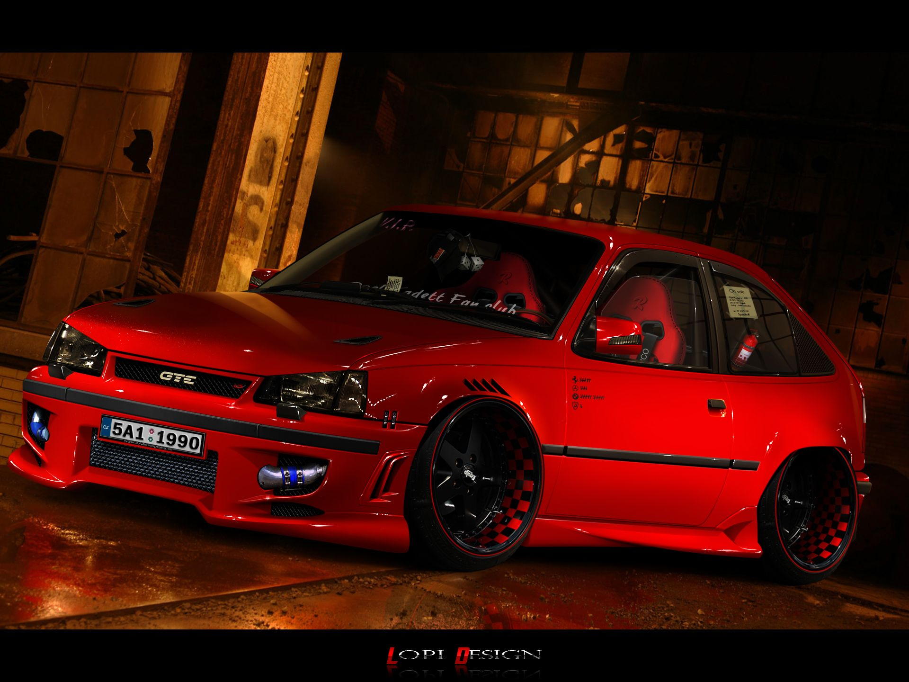
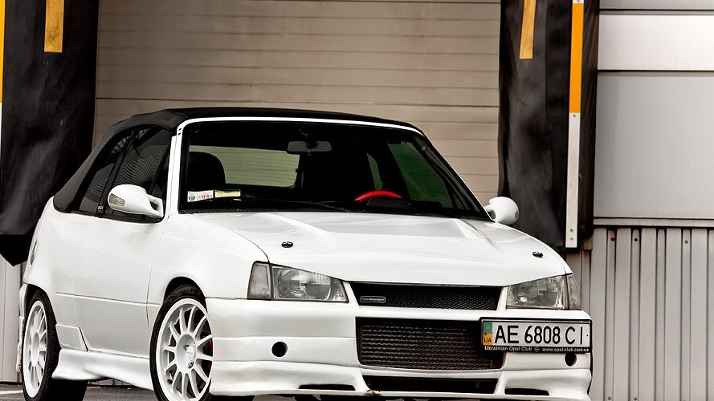

Opel Kadet
Opel Kadet
Hello about Opel Kadet
Kadett E The Opel Kadett GSi came fitted with a naturally aspirated
2.0-liter 16-valve four-cylinder producing 156 hp (115 kW / 158 PS) and 203 Nm (150 lb-ft) of torque.
We have seen some pretty wild powertrain modifications in Kadetts, but the listing doesn’t mention any so we guess the engine remains
in stock form. The current owner has back issues and didn’t find it comfortable to drive, so it might feature a stiffer suspension than the
factory-spec model.
 |
- if you want to make such a car, you need to have
- you must have money
- you must have desire
Next Opel Kadett Tuning
This old Opel Kadett can burn rubber like no other, but most importantly, it can humiliate modern supercars in a straight line acceleration.
With an almost stock exterior, bar the giant intercooler visible from beneath the front grille, and a few updates here and there,
including the addition of a roll cage in case things go bad, the car was filmed at a drag racing event in Germany.
At this point, you may rightfully ask what is a Kadett E doing at the drag strip?
The answer lies in the description of the video, which claims the predecessor of the Astra packs a
